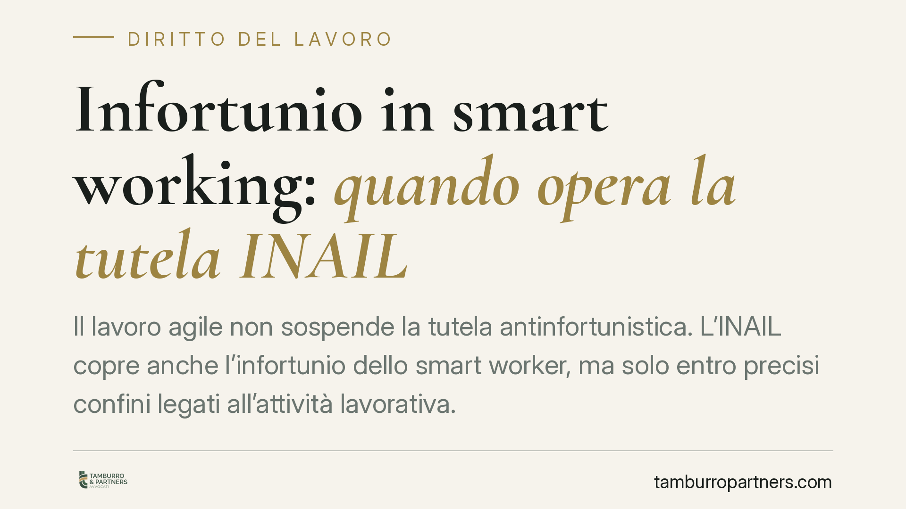

Infortunio in smart working: quando opera la tutela INAIL
Il lavoro agile non sospende la tutela antinfortunistica. L'INAIL copre anche l'infortunio dello smart worker, ma solo entro precisi confini legati all'attività lavorativa. Capire dove finisce il lavoro e inizia la vita privata è decisivo: da questa distinzione dipende il riconoscimento del risarcimento e l'esito di eventuali contenziosi con l'Istituto.

Il quadro: lo smart worker resta un lavoratore tutelato
Il lavoro agile (o *smart working*) è la modalità di esecuzione del rapporto subordinato senza vincoli fissi di orario o luogo, regolata dagli artt. 18 e seguenti della L. 81/2017. La flessibilità del luogo di lavoro non riduce le garanzie: il lavoratore agile mantiene gli stessi diritti del collega in sede, inclusa la tutela contro gli infortuni.
La questione pratica, però, è un'altra: come si accerta che un infortunio avvenuto in casa, o fuori sede, sia davvero "di lavoro"?
Inquadramento normativo
La copertura assicurativa dello smart worker è disciplinata dall'art. 23 della L. 81/2017. La norma riconosce il diritto alla tutela INAIL contro gli infortuni e le malattie professionali connessi alla prestazione resa all'esterno dei locali aziendali, secondo i criteri generali del T.U. infortuni (D.P.R. 1124/1965, il cui art. 2 definisce l'infortunio indennizzabile come quello avvenuto "per causa violenta in occasione di lavoro").
Lo stesso art. 23 estende la tutela all'infortunio in itinere, cioè quello occorso durante il tragitto tra l'abitazione e il luogo prescelto per svolgere la prestazione, quando la scelta di tale luogo sia dettata da esigenze connesse alla prestazione stessa o da necessità di conciliazione tra vita e lavoro, nei limiti della ragionevolezza.
Sul piano operativo, l'INAIL ha fornito le prime indicazioni applicative con la circolare n. 48/2017, che chiarisce come la valutazione del nesso con l'attività lavorativa vada condotta caso per caso.
Il nodo del "nesso di occasione lavorativa"
Il criterio decisivo è il nesso di occasione lavorativa: l'evento deve collegarsi, direttamente o indirettamente, allo svolgimento della prestazione.
Un esempio chiarisce il confine. Se il lavoratore si infortuna mentre raggiunge la postazione o utilizza gli strumenti di lavoro, l'evento è in occasione di lavoro. Se invece l'infortunio avviene durante un'attività puramente privata, scollegata dalla prestazione — ad esempio cucinando in pausa pranzo per ragioni personali — la tutela tende a escludersi, salvo che l'atto rientri tra le normali esigenze fisiologiche compatibili con la continuità lavorativa.
La linea di separazione è sottile e genera contenzioso. Una pronuncia di merito del 2024 (riferimento da verificare nel dato identificativo completo) ha riconosciuto la copertura in un caso di incidente occorso al rientro dopo adempimenti genitoriali, valorizzando la ratio di conciliazione vita-lavoro sottesa alla disciplina del lavoro agile. Si tratta di un orientamento che amplia l'area di tutela, ma non costituisce automatismo: ogni fattispecie va esaminata nella sua concretezza.
Implicazioni pratiche
Per il lavoratore, la conseguenza è che la copertura non è scontata: dipende dalla ricostruzione del collegamento tra l'evento e la prestazione. Documentare dove e come si lavora diventa quindi determinante.
Per il datore di lavoro, resta centrale l'obbligo informativo: l'art. 22 della L. 81/2017 impone la consegna al lavoratore, con cadenza almeno annuale, di un'informativa scritta sui rischi generali e specifici connessi alla modalità agile. Un'informativa accurata e un accordo individuale ben redatto riducono l'incertezza sulla copertura e, con essa, il rischio di contenzioso.
L'accordo individuale di lavoro agile svolge qui una funzione pratica spesso sottovalutata: definendo luoghi, strumenti e fasce di operatività, aiuta a delimitare l'area entro cui l'infortunio è riconducibile al lavoro.
Cosa fare in concreto
- Formalizzate con precisione l'accordo di lavoro agile: indicate luoghi ammessi, strumenti forniti e fasce di reperibilità, perché definiscono il perimetro della copertura.
- Conservate l'informativa sui rischi ex art. 22 L. 81/2017 e verificatene l'aggiornamento annuale.
- In caso di infortunio, denunciate l'evento tempestivamente: la denuncia va presentata nei termini di legge, documentando luogo, orario e attività in corso al momento dell'evento.
- Raccogliete elementi di prova sul nesso lavorativo: comunicazioni di servizio, log di accesso ai sistemi, testimonianze utili a collocare l'evento nell'ambito della prestazione.
- In caso di diniego INAIL, è opportuno valutare la posizione alla luce della disciplina dell'art. 23 L. 81/2017 e della giurisprudenza recente prima di definire le iniziative da assumere.
---
*Contributo informativo a cura di Tamburro & Partners — Avv. Giuseppe Tamburro. Non costituisce parere legale.*
Ogni storia di lavoro ha i suoi tempi.
Se gestisci HR e vuoi un confronto su contenzioso, ispezioni o licenziamenti, scrivi allo studio. Ti rispondiamo entro un giorno lavorativo.